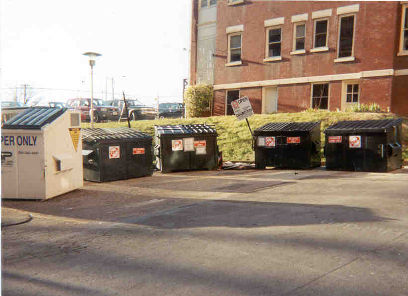
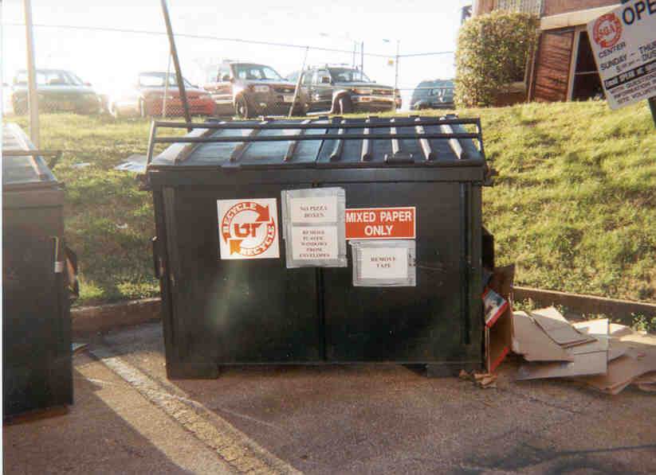
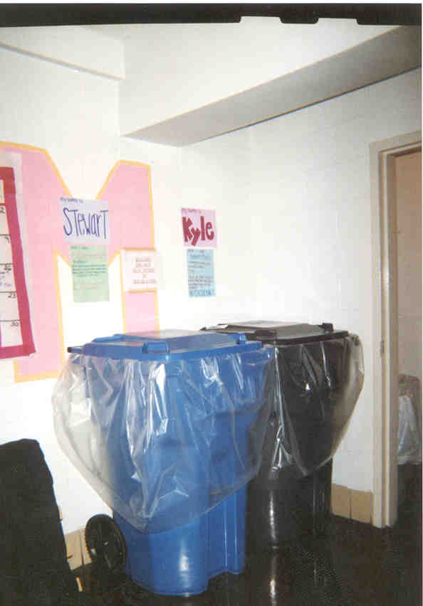
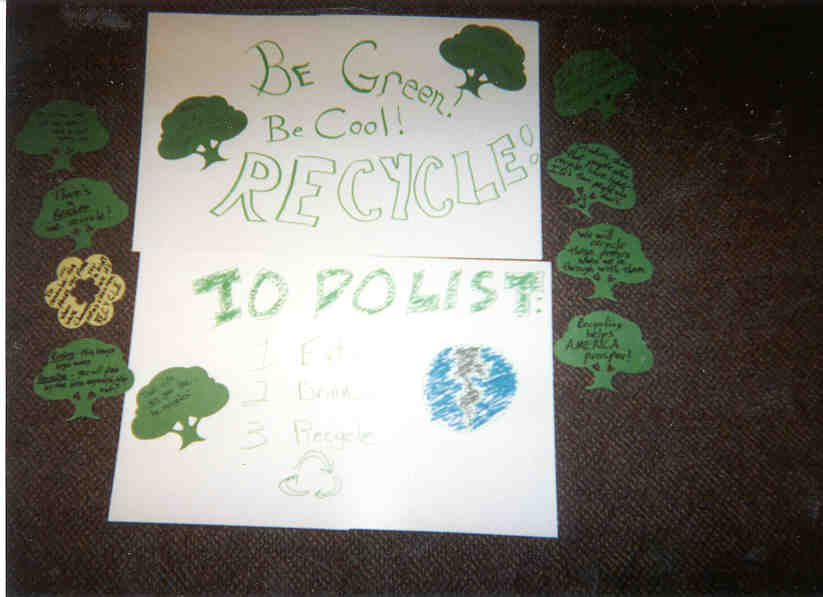
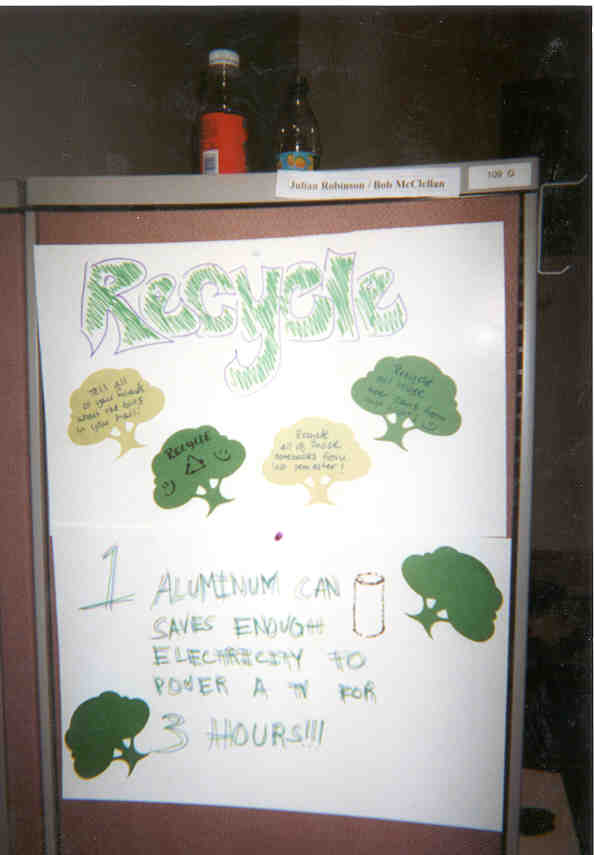

Recycling sign at the east campus bins.

East campus: mixed paper, plastic, aluminum, and newspaper bins.

Close up of mixed paper bin.

Stewart and Kyle, Massey Hall's new "residents."

Plastic/Aluminum and Mixed Paper/Newspaper recycling bins.
There is one set on each floor in Massey Hall.

Massey residents recycle paper!!

